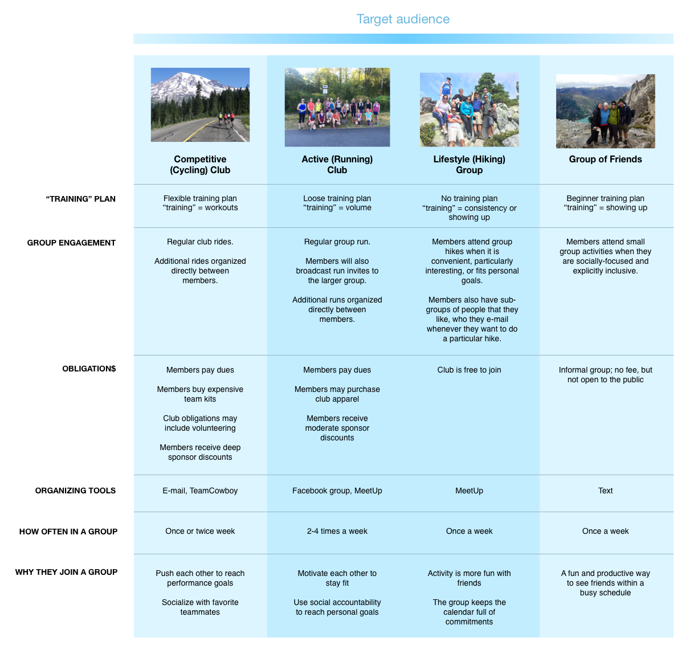
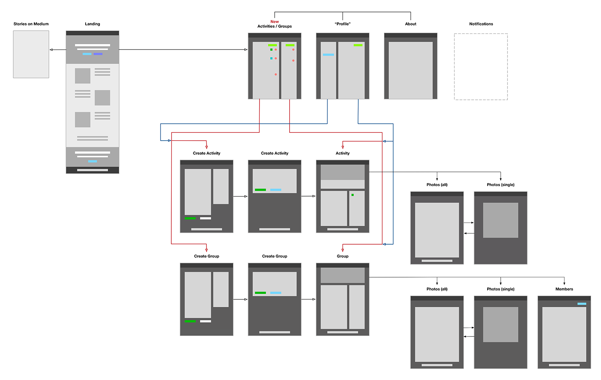

motion.social
When I arrived as the first hire at motion.social, the product was simply a website with a collection of local bike routes. The Co-Founders knew that they wanted to create a product that focused on the social fitness lifestyle, but exactly how that translated into a product was still unclear.
RESEARCH
I began my work by interviewing our target audience: those who are social through fitness. My aim was to uncover what common frustrations they had that we could solve through design.
What I discovered was that planning a group activity was a common point of annoyance. Long e-mail threads clogged inboxes, group texts were inescapable, the generic tools that did exist were polluted with unreleated content and required linking several services together to achieve the desired effect.
Thus, my proposal was to create an activity planning tool that focused on the niche needs of our target audience.
DISCOVERIES
With this new vision in mind, I again conducted interviews to dig in to how people plan their fitness activities. First, I identified the key details of a social fitness activity:
- Activity/Sport
- People
- Date and Time
- Location/Route
- Pace
- Distance
What I discovered is that the importance of these details varied from user to user, depending on their greater priorities. High-priority details would be chosen at the outset, but lower-priority details would be left open to input. Then these details that were open to input would generate the long threads that were the source of so much frustration.

DESIGN CHALLENGE
My design challenge was to allow users to work within this natural method of planning an activity: decide the details that are important to you, then query the group about the rest– but without the tangled mess.
DESIGN SOLUTION
My solution is to allow locking/unlocking of details and polling. When a user plans an activity, she should be able to "lock" the details that are inflexible, "unlock" details that are open to input, and "poll" for details that must be from a list of choices. This way users can more efficiently reach a consensus!
DESIGNING THE FOUNDATION
Of course, to build this idea, we must start at the beginning. Where would these activities live and how would they be made and shared? I fleshed out the idea that there would be Activities, optional Groups to host these Activities, and a News feed to host all the latest updates. Each would provide a different way for users to find the content most important to them.
After site mapping, several rounds of sketches, quick mock-ups, and testing with users– we dropped the News section for its redundant content and focused on creating the quickest workflow possible for creating activities.
DESIGNING ACTIVITY CREATION
I designed the user flow for creating an activity to be fast. My design rules were that we’d predict what we could, prominently feature only the essential options, and allow customization without slowing down more hurried users.
For example, once you’ve selected ‘cycling’ as an activity type, the ‘extra info’ section is populated with Distance, Speed, and Route, and the banner photo is populated with a relevant image (the images were also designed by me). Motion.social could take this a step farther by populating the activity type when creating an activity for a group that mostly creates activities of that type.
While prediction is handy for users in a hurry, offering customization makes our tool more powerful and useful to users with unique needs. For example, while predictive suggestions are offered as users type a meeting location, users can also access a map modal to drop a more precise pin. This is especially relevant to groups who need to meet at a specific parking lot in a large park, and a pin centered in the middle of the park would be misleading.
ITERATING
After launching our minimally viable version of motion.social, I connected with our early adopters to observe them using our product and get feedback on their experience. I was interested in both their macro and micro satisfaction, from whether the product was useful to them at all, to whether they could complete tasks on the site without confusion. This qualitative field research was very efficient at helping me identify and prioritize what improvements and features to add next.
Unfortunately, my initial idea of polling for details did not make it to the final product (despite my regular campaigning for it) before funding for the project ran out.
TODAY
While motion.social has not yet procured further funding, the co-founders continue to promote moton.social at running, adventure, and cycling events throughout the greater Seattle area.
Check out motion.social in the Startup Spotlight on GeekWire.